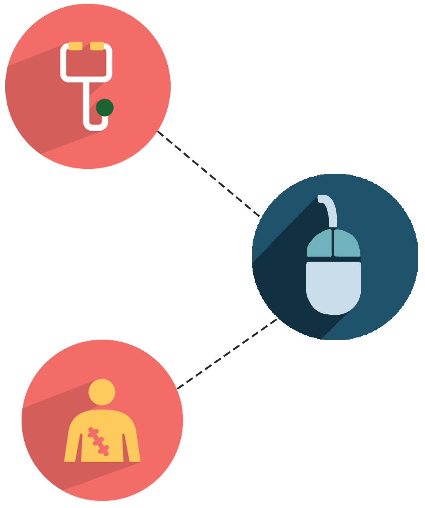

<div class="container spaced">
  <div class="row">
    <div class="col-md-1 col-sm-1"></div>
    <div class="col-md-7 col-sm-7">
      <h1 class='header'>HIPAA-Compliant Video Conferencing</h1>
      <ul>
        <li class="txt">Call scheduling and management made easy.</li>
        <li class="txt">Privacy compliant with national security standards.</li>
        <li class="txt">Designed for patients and doctors, used by anyone.</li>
      </ul>
      <p class='txt'>In war-torn countries, the ratio of doctors to patients at refugee camps is approximately 1 to 2060. Telemedicine applications provide a low-cost, sustainable solution to the physician shortage crisis by allowing doctors who are unable to travel or stay at remote and under-resourced countries to provide aid to patients. Through video conferencing, doctors can communicate and follow-up with patients, obtain patient clinical information, make an accurate diagnosis, and develop a treatment plan through secure HIPAA-certified video sessions. Cornell Engineering World Health is currently working alongside Speetar, a startup founded by the physicians at Massachusetts General Hospital, to develop a prototype.</p>
      <button class="btn-standard btn-hop btn-deep-blue" ng-click="authenticate('google')">
        <i class="fa fa-google" aria-hidden="true"></i> Sign Up with Google
      </button>
      <a class="btn-standard btn-hop" href ="https://ewh.engineering.cornell.edu/">
        Learn More
      </a>
    </div>
    <div class="col-md-3 col-sm-3">
      
    </div>
    <div class="col-md-1 col-sm-1"></div>
  </div>
</div>
